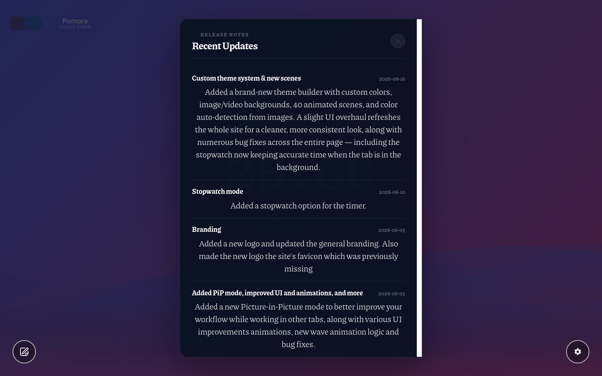
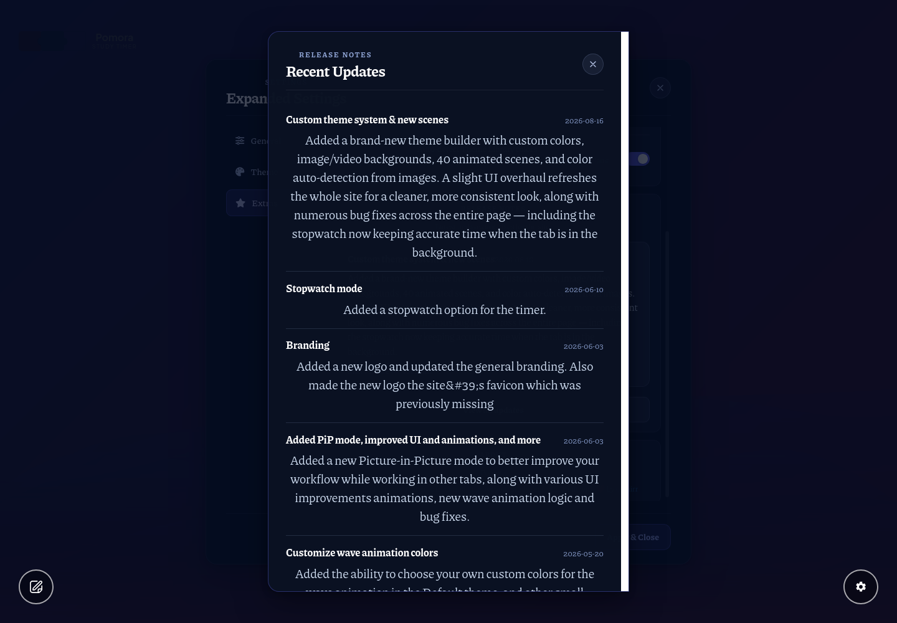
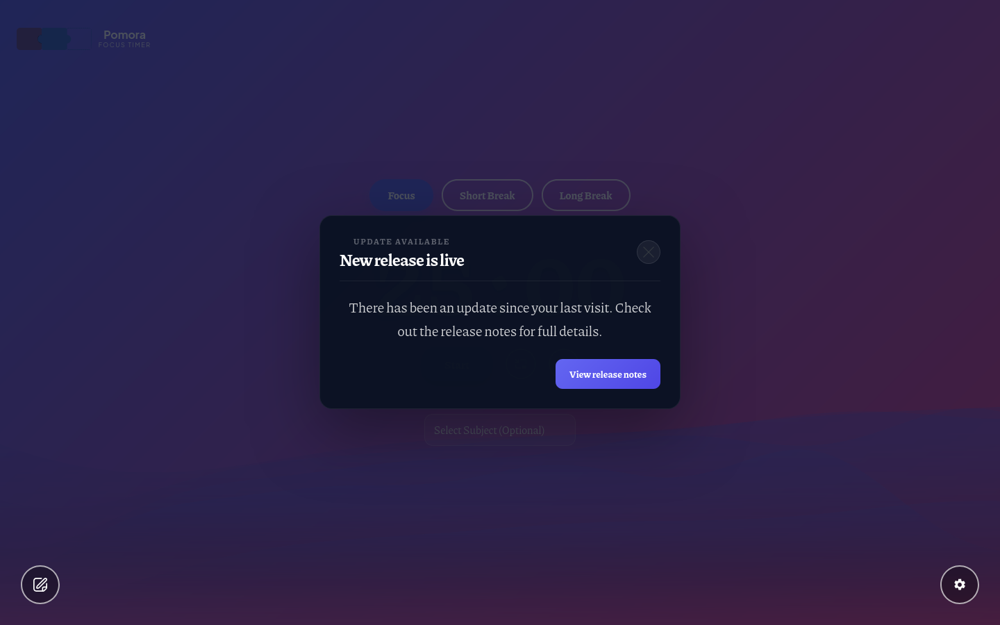
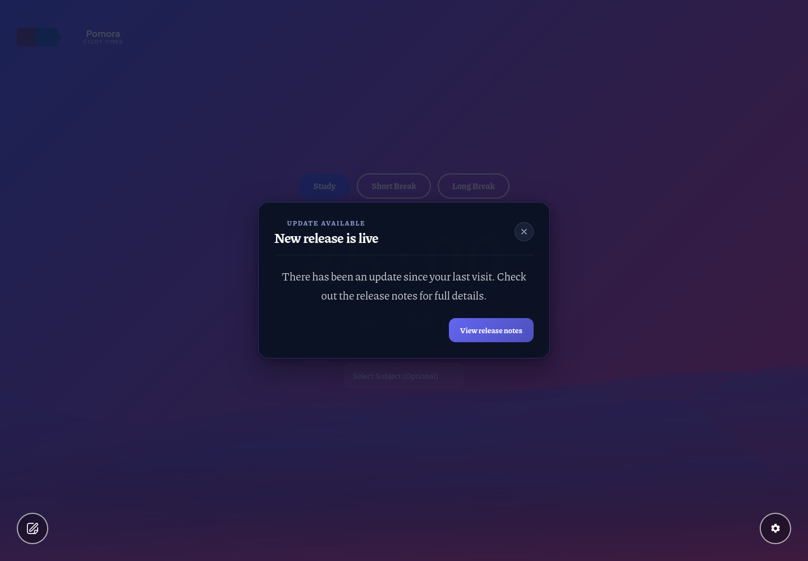
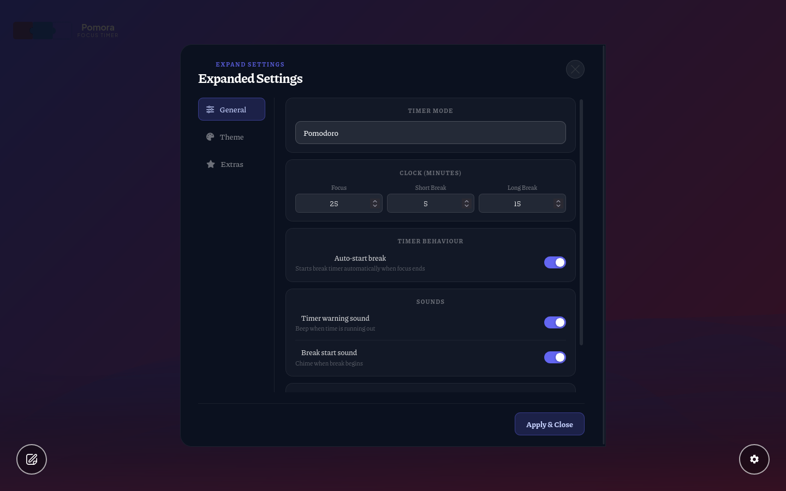
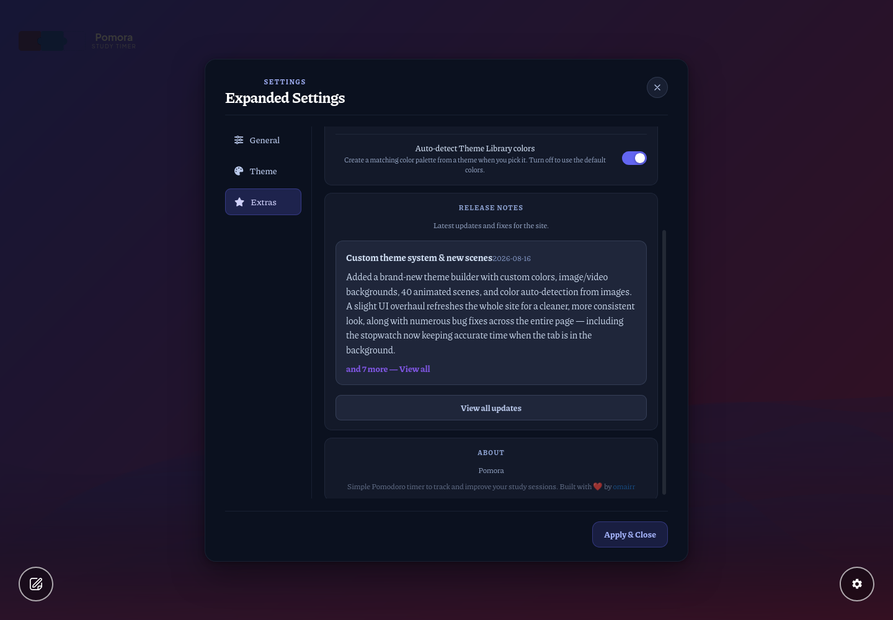

Brought to the approved planner-v3 standard: accent-bounded cards with indigo glow, gradient white→accent titles, alto-blue eyebrow + dates (no white-alpha gray), tinted preview cards with accent-hover, glowing primary button — and the whole surface theme-adaptive via --s23-* variables that re-map to --th-accent under custom themes. The earlier gentle-diet wins (radius unification, unified date typography, springy motion, sanitizeInput fix) all carry over.


Battery asserts: card hairline = indigo 35%, eyebrow + dates = alto #8fa4d4, title carries the accent gradient, preview chrome register = tinted blue family, primary button glow.




The extras previews live in the advanced-settings modal — the --s23-* register is defined on body so they inherit it even outside the overlay shells.